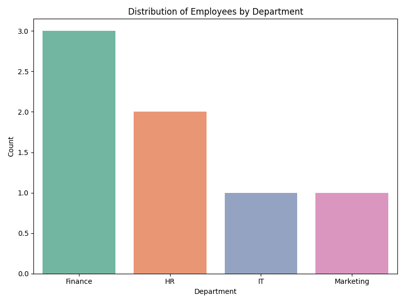

Frequency count for Finance department: 3

import pandas as pd
import matplotlib.pyplot as plt
import seaborn as sns
data = {
"EmployeeID": [1, 2, 3, 4, 5, 6, 7],
"Name": ["Alice", "Bob", "Charlie", "David", "Eva", "Frank", "Grace"],
"Department": ["Finance", "HR", "Finance", "IT", "Marketing", "Finance", "HR"],
"Region": ["North", "South", "East", "West", "North", "South", "East"],
"PerformanceScore": [85, 90, 88, 70, 75, 95, 80]
}
df = pd.DataFrame(data)
finance_count = (df["Department"] == "Finance").sum()
plt.figure(figsize=(8, 6))
sns.countplot(x="Department", data=df, palette="Set2")
plt.title("Distribution of Employees by Department")
plt.xlabel("Department")
plt.ylabel("Count")
plt.tight_layout()
plt.show()